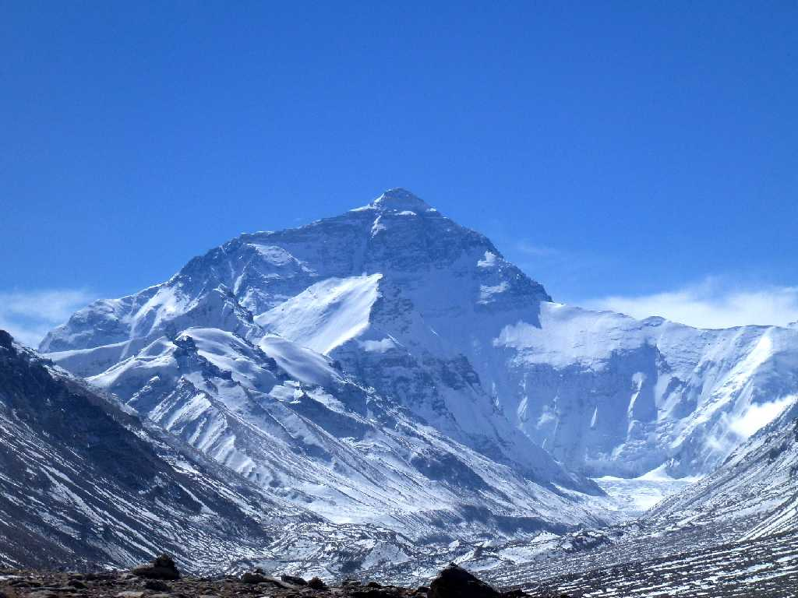
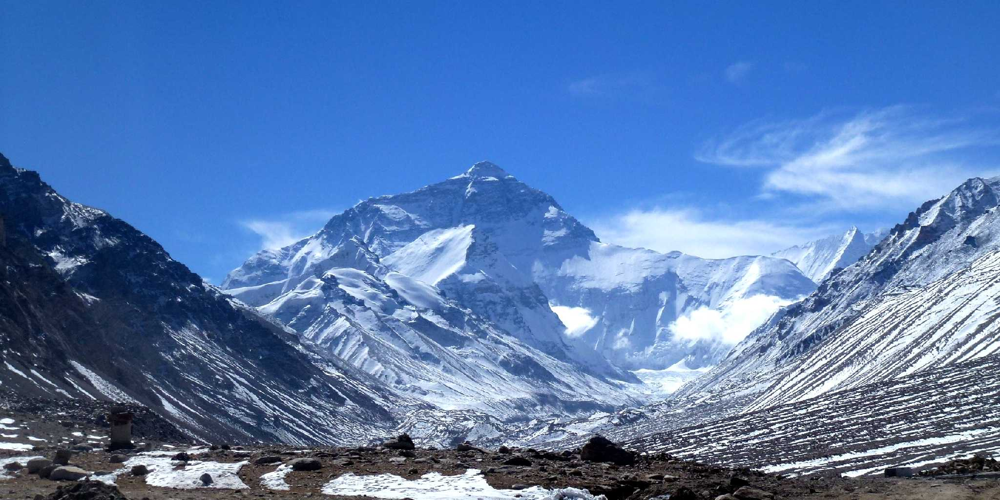
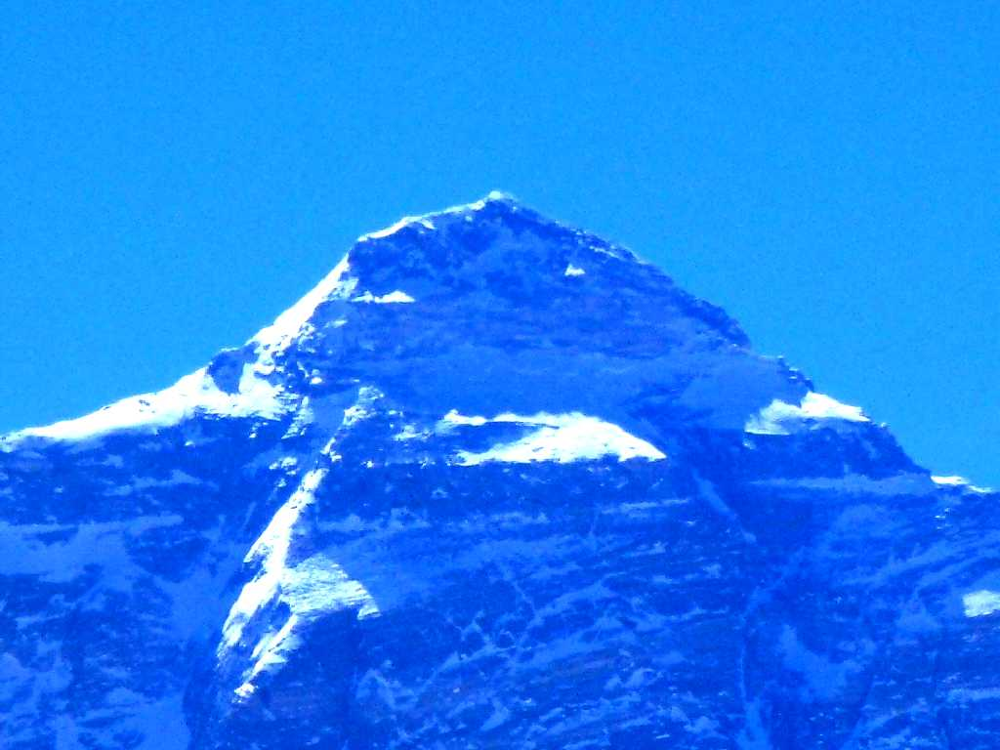
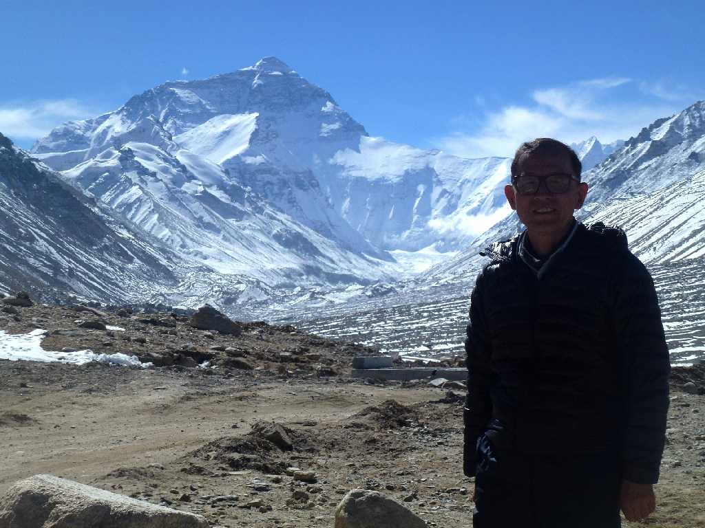
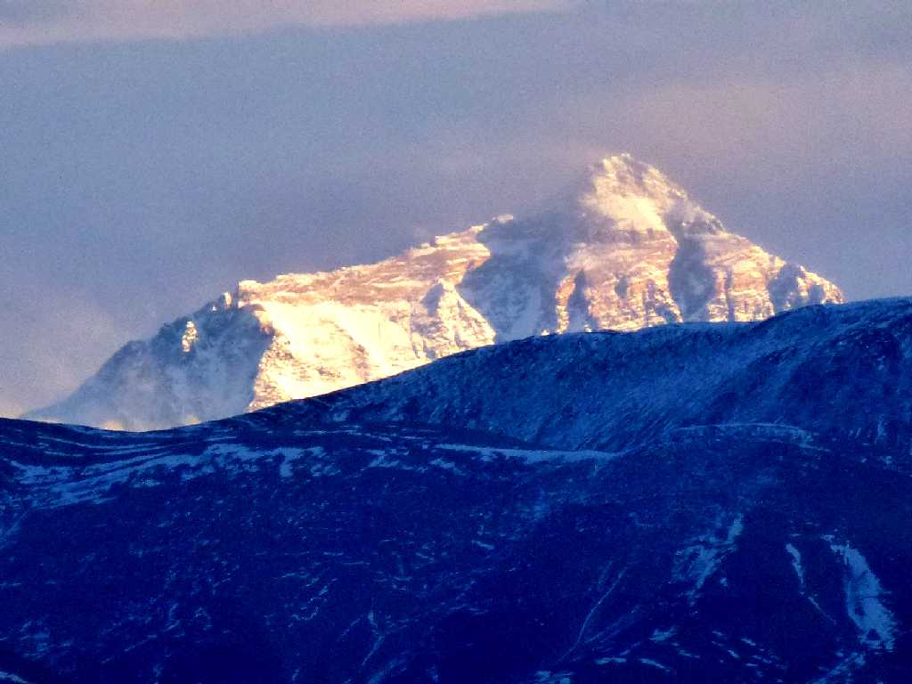
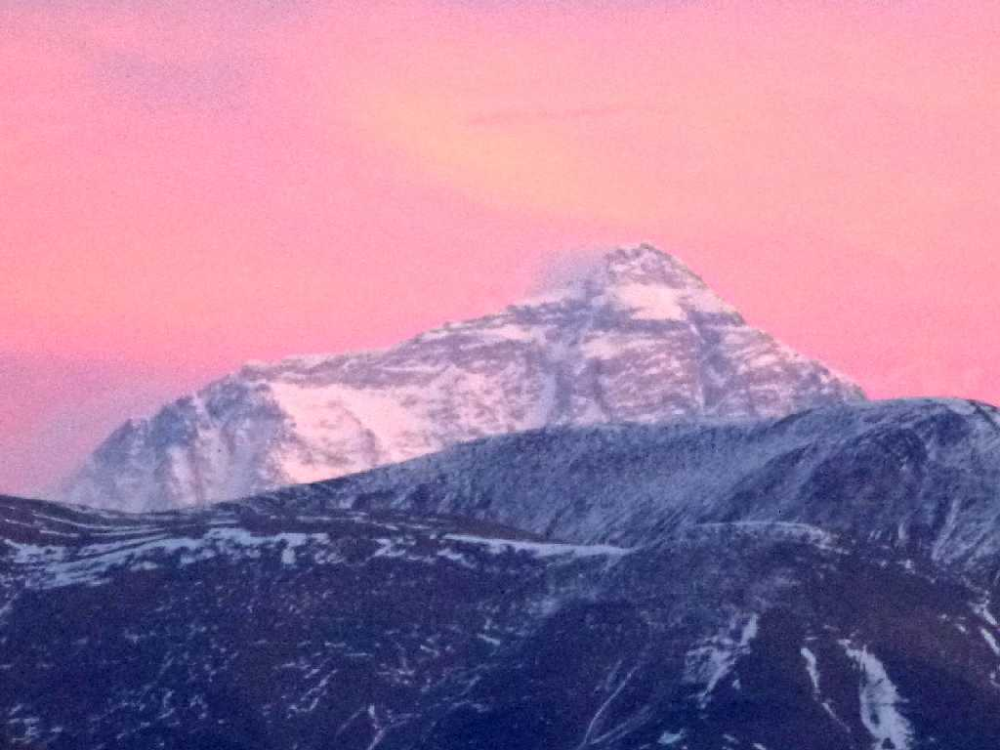

8,848m Chomolungma Rongbuk Tibet 西藏 绒布 珠穆朗玛峰
ロンボク村から眺めるエベレスト山はチョモランマベースキャンプより綺麗だった

8,848m Chomolungma Rongbuk

Summit 8,848m Chomolungma Rongbuk

October 25 2014 8,848m Chomolungma Rongbuk

Evening View 8,848m Chomolungma Tingri 定日 珠穆朗玛峰

Evening View 8,848m Chomolungnma Tingri